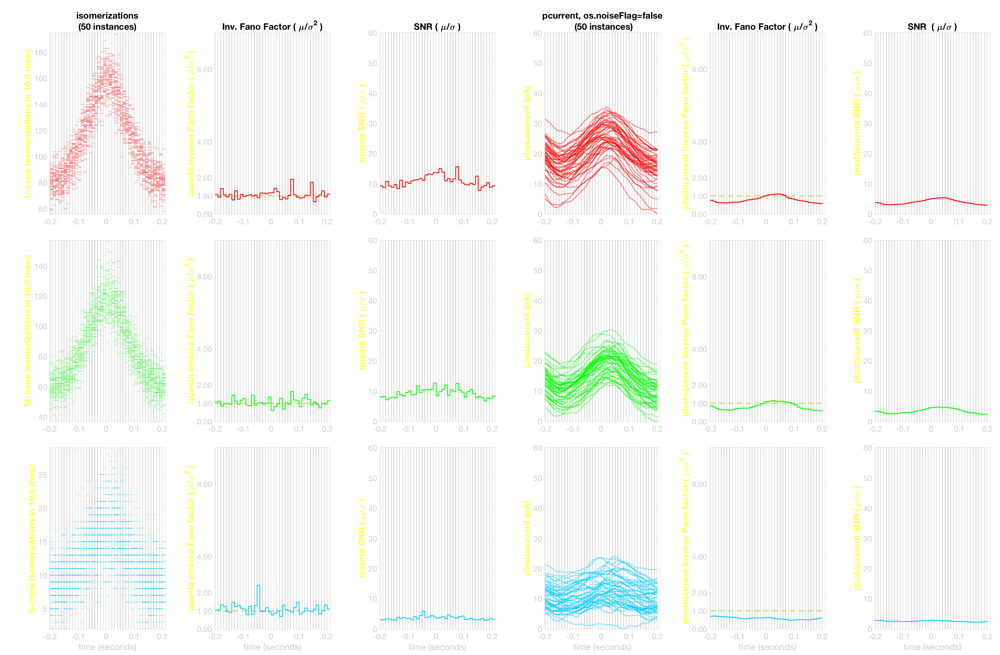
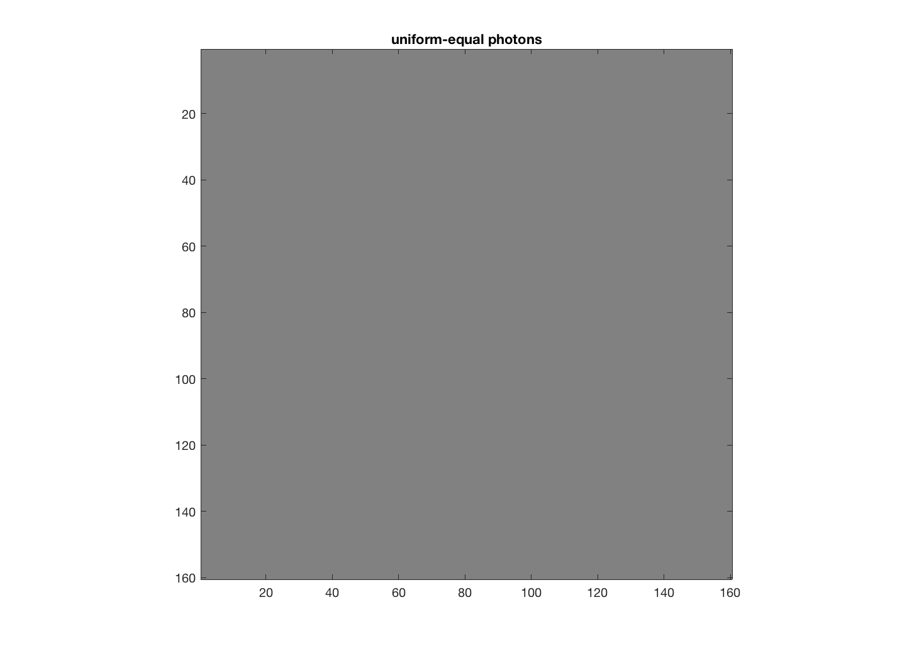
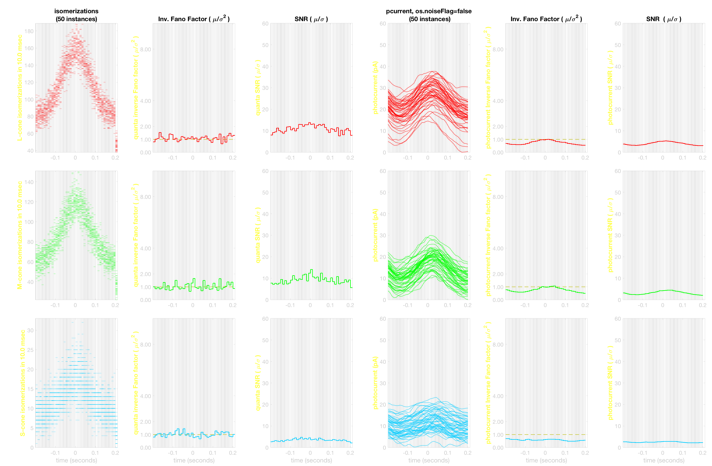
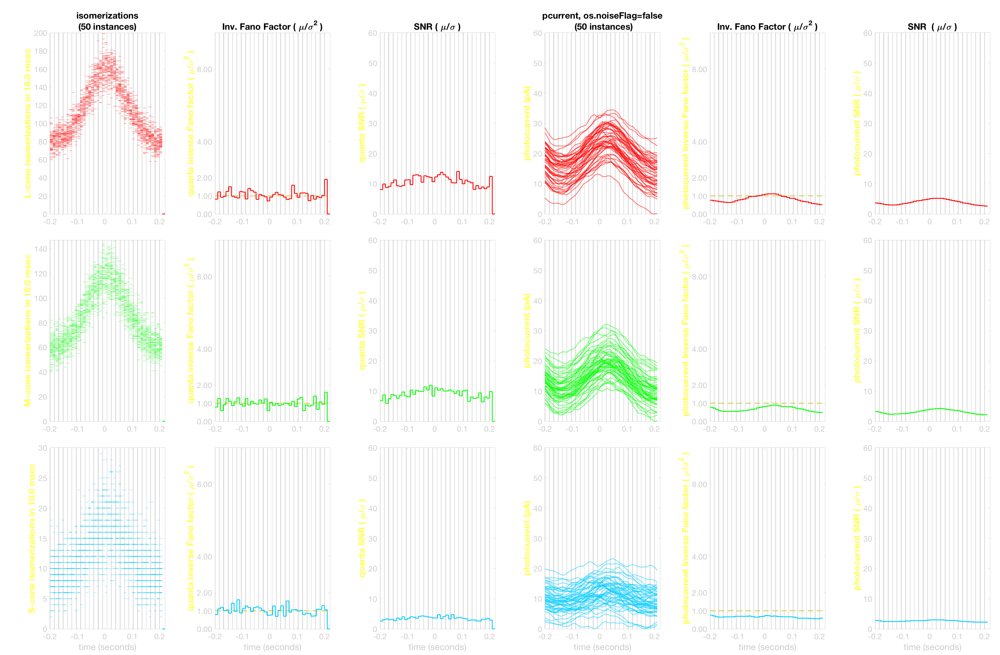
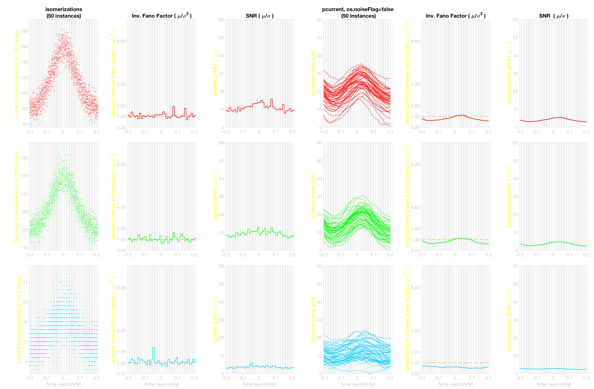
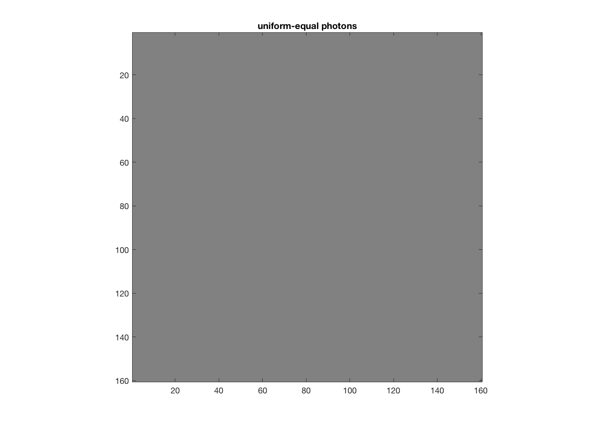
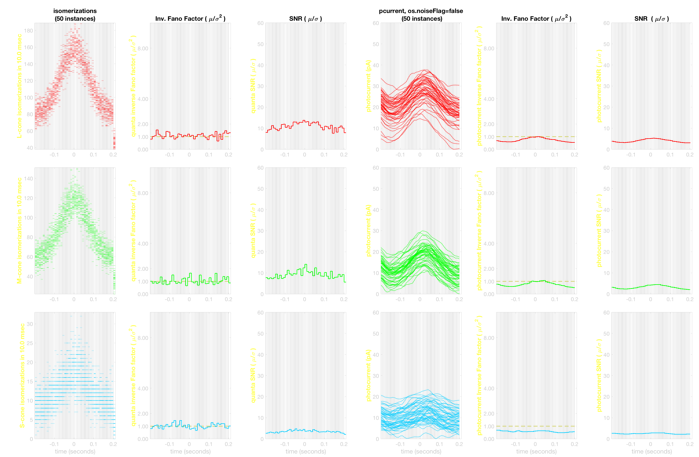
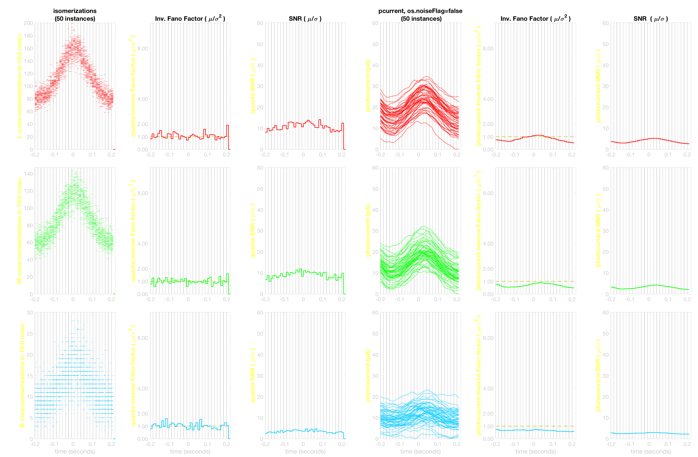

Contents
function varargout = v_osTimeStep(varargin) % % Demonstrate simulations using three different timebases, % For stimuli (based on stimulus refresh rate), % For absorptions and eye movements (based on coneMosaic.integrationTime) % For outer segment current computations (based on os.timeStep) % % Mainly, we can just use the compute method of the @coneMosaic class for % either a single image or for a sequence of oi images (oiSequence class). % % This script demonstrates the direct usage of the computeForOISequence() % method of @coneMosaic. The sequence version of compute calculates % absorptions and photocurrents for an oiSequence class of optical images % with eye movements. % % NPC, ISETBIO TEAM, 2016 varargout = UnitTest.runValidationRun(@ValidationFunction, nargout, varargin); end
Function implementing the isetbio validation code
function ValidationFunction(runTimeParams)
The ground truth data are no longer consistent. This code is too long, needs some attention and simplification.
Init
ieInit; % Reproduce identical random number rng('default'); rng(1); % Define number of response instances instancesNum = 50; % Steady params c0 = struct(... 'mosaicSize', nan, ... % 1 L-, 1 M-, and 1 S-cone only 'meanLuminance', 100, ... % scene mean luminance 'modulationGain', 1.0, ... % 100% modulation against background 'modulationRegion', 'FULL', ... % modulate the central image (choose b/n 'FULL', and 'CENTER') 'stimulusSamplingInterval', nan, ... % we will vary this one 'integrationTime', 10/1000, ... % 10 msec integrationTime 'photonNoise', 'frozen', ... % add Poisson noise 'osTimeStep', 0.1/1000, ... % 0.1 millisecond 'osNoise', 'frozen' ... % photocurrent noise ); % Identical stimulus sampling interval and integration time stimulusConditionIndex = 1; theCondition = c0; theCondition.stimulusSamplingInterval = 10/1000; c{stimulusConditionIndex} = theCondition; % Stimulus sampling interval < integration time stimulusConditionIndex = 2; theCondition = c0; theCondition.stimulusSamplingInterval = 7/1000; c{stimulusConditionIndex} = theCondition; % Stimulus sampling interval > integration time stimulusConditionIndex = 3; theCondition = c0; theCondition.stimulusSamplingInterval = 16/1000; c{stimulusConditionIndex} = theCondition; for stimulusConditionIndex = 1:numel(c) [ theConeMosaic{stimulusConditionIndex}, ... theOIsequence{stimulusConditionIndex}, ... oiTimeAxis{stimulusConditionIndex}, ... absorptionsTimeAxis{stimulusConditionIndex}, ... photocurrentsTimeAxis{stimulusConditionIndex}, ... allInstancesAbsorptionsCountSequence{stimulusConditionIndex}, ... allInstancesIsomerizationRateSequence{stimulusConditionIndex}, ... allInstancesPhotoCurrents{stimulusConditionIndex} ... ] = runSimulation(c{stimulusConditionIndex}, instancesNum, runTimeParams); if (runTimeParams.generatePlots) plotSNR(absorptionsTimeAxis{stimulusConditionIndex}, ... oiTimeAxis{stimulusConditionIndex}, ... photocurrentsTimeAxis{stimulusConditionIndex}, ... allInstancesAbsorptionsCountSequence{stimulusConditionIndex}, ... allInstancesPhotoCurrents{stimulusConditionIndex}, ... stimulusConditionIndex); end end % Save validation data % conditions data UnitTest.validationData('condParams', c); UnitTest.validationData('oiTimeAxisCond1', oiTimeAxis{1}); UnitTest.validationData('absorptionsTimeAxisCond1', absorptionsTimeAxis{1}); UnitTest.validationData('photoCurrentTimeAxisCond1', photocurrentsTimeAxis{1}); UnitTest.validationData('allInstancesAbsorptionsCountSequenceCond1', allInstancesAbsorptionsCountSequence{1}); UnitTest.validationData('allInstancesIsomerizationRateSequenceCond1', round(allInstancesIsomerizationRateSequence{1}, 4)); UnitTest.validationData('allInstancesPhotoCurrentsCond1', round(allInstancesPhotoCurrents{1}, 5)); UnitTest.validationData('oiTimeAxisCond2', oiTimeAxis{2}); UnitTest.validationData('absorptionsTimeAxisCond2', absorptionsTimeAxis{2}); UnitTest.validationData('photoCurrentTimeAxisCond2', photocurrentsTimeAxis{2}); UnitTest.validationData('allInstancesAbsorptionsCountSequenceCond2', allInstancesAbsorptionsCountSequence{2}); UnitTest.validationData('allInstancesIsomerizationRateSequenceCond2', round(allInstancesIsomerizationRateSequence{2}, 4)); UnitTest.validationData('allInstancesPhotoCurrentsCond2', round(allInstancesPhotoCurrents{2}, 5)); UnitTest.validationData('oiTimeAxisCond3', oiTimeAxis{3}); UnitTest.validationData('absorptionsTimeAxisCond3', absorptionsTimeAxis{3}); UnitTest.validationData('photoCurrentTimeAxisCond3', photocurrentsTimeAxis{3}); UnitTest.validationData('allInstancesAbsorptionsCountSequenceCond3', allInstancesAbsorptionsCountSequence{3}); UnitTest.validationData('allInstancesIsomerizationRateSequenceCond3', round(allInstancesIsomerizationRateSequence{3}, 4)); UnitTest.validationData('allInstancesPhotoCurrentsCond3', round(allInstancesPhotoCurrents{3}, 5)); % Extra data: coneMosaics and oiSequences UnitTest.extraData('theConeMosaicCond1', theConeMosaic{1}); UnitTest.extraData('theOIsequenceCond1', theOIsequence{1}); UnitTest.extraData('theConeMosaicCond2', theConeMosaic{2}); UnitTest.extraData('theOIsequenceCond2', theOIsequence{2}); UnitTest.extraData('theConeMosaicCond3', theConeMosaic{3}); UnitTest.extraData('theOIsequenceCond4', theOIsequence{3});
Frozen noise added: seed 103 Frozen noise added: seed 104 Frozen noise added: seed 105 Frozen noise added: seed 106 Frozen noise added: seed 107 Frozen noise added: seed 108 Frozen noise added: seed 109 Frozen noise added: seed 110 Frozen noise added: seed 111 Frozen noise added: seed 112 Frozen noise added: seed 113 Frozen noise added: seed 114 Frozen noise added: seed 115 Frozen noise added: seed 116 Frozen noise added: seed 117 Frozen noise added: seed 118 Frozen noise added: seed 119 Frozen noise added: seed 120 Frozen noise added: seed 121 Frozen noise added: seed 122 Frozen noise added: seed 123 Frozen noise added: seed 124 Frozen noise added: seed 125 Frozen noise added: seed 126 Frozen noise added: seed 127 Frozen noise added: seed 128 Frozen noise added: seed 129 Frozen noise added: seed 130 Frozen noise added: seed 131 Frozen noise added: seed 132 Frozen noise added: seed 133 Frozen noise added: seed 134 Frozen noise added: seed 135 Frozen noise added: seed 136 Frozen noise added: seed 137 Frozen noise added: seed 138 Frozen noise added: seed 139 Frozen noise added: seed 140 Frozen noise added: seed 141 Frozen noise added: seed 142 Frozen noise added: seed 143 Frozen noise added: seed 144 Frozen noise added: seed 145 Frozen noise added: seed 146 Frozen noise added: seed 147 Frozen noise added: seed 148 Frozen noise added: seed 149 Frozen noise added: seed 150 Frozen noise added: seed 151 Frozen noise added: seed 152 Frozen noise added: seed 103 Frozen noise added: seed 105 Frozen noise added: seed 106 Frozen noise added: seed 107 Frozen noise added: seed 108 Frozen noise added: seed 109 Frozen noise added: seed 110 Frozen noise added: seed 111 Frozen noise added: seed 112 Frozen noise added: seed 113 Frozen noise added: seed 114 Frozen noise added: seed 115 Frozen noise added: seed 116 Frozen noise added: seed 117 Frozen noise added: seed 118 Frozen noise added: seed 119 Frozen noise added: seed 120 Frozen noise added: seed 121 Frozen noise added: seed 122 Frozen noise added: seed 123 Frozen noise added: seed 124 Frozen noise added: seed 125 Frozen noise added: seed 126 Frozen noise added: seed 127 Frozen noise added: seed 128 Frozen noise added: seed 129 Frozen noise added: seed 130 Frozen noise added: seed 131 Frozen noise added: seed 132 Frozen noise added: seed 133 Frozen noise added: seed 134 Frozen noise added: seed 135 Frozen noise added: seed 136 Frozen noise added: seed 137 Frozen noise added: seed 138 Frozen noise added: seed 139 Frozen noise added: seed 140 Frozen noise added: seed 141 Frozen noise added: seed 142 Frozen noise added: seed 143 Frozen noise added: seed 144 Frozen noise added: seed 145 Frozen noise added: seed 146 Frozen noise added: seed 147 Frozen noise added: seed 148 Frozen noise added: seed 149 Frozen noise added: seed 150 Frozen noise added: seed 151 Frozen noise added: seed 152 Frozen noise added: seed 153 Frozen noise added: seed 154 Frozen noise added: seed 105 Frozen noise added: seed 70 Frozen noise added: seed 71 Frozen noise added: seed 72 Frozen noise added: seed 73 Frozen noise added: seed 74 Frozen noise added: seed 75 Frozen noise added: seed 76 Frozen noise added: seed 77 Frozen noise added: seed 78 Frozen noise added: seed 79 Frozen noise added: seed 80 Frozen noise added: seed 81 Frozen noise added: seed 82 Frozen noise added: seed 83 Frozen noise added: seed 84 Frozen noise added: seed 85 Frozen noise added: seed 86 Frozen noise added: seed 87 Frozen noise added: seed 88 Frozen noise added: seed 89 Frozen noise added: seed 90 Frozen noise added: seed 91 Frozen noise added: seed 92 Frozen noise added: seed 93 Frozen noise added: seed 94 Frozen noise added: seed 95 Frozen noise added: seed 96 Frozen noise added: seed 97 Frozen noise added: seed 98 Frozen noise added: seed 99 Frozen noise added: seed 100 Frozen noise added: seed 101 Frozen noise added: seed 102 Frozen noise added: seed 103 Frozen noise added: seed 104 Frozen noise added: seed 105 Frozen noise added: seed 106 Frozen noise added: seed 107 Frozen noise added: seed 108 Frozen noise added: seed 109 Frozen noise added: seed 110 Frozen noise added: seed 111 Frozen noise added: seed 112 Frozen noise added: seed 113 Frozen noise added: seed 114 Frozen noise added: seed 115 Frozen noise added: seed 116 Frozen noise added: seed 117 Frozen noise added: seed 118 Frozen noise added: seed 119 Frozen noise added: seed 70
    
    end % ------- Main computation function -------- function [theConeMosaic, theOIsequence, ... oiTimeAxis, absorptionsTimeAxis, photocurrentsTimeAxis, ... allInstancesAbsorptionsCountSequence, ... allInstancesIsomerizationRateSequence, ... allInstancesPhotoCurrents] = runSimulation(condData, instancesNum, runtimeParams) mosaicSize = condData.mosaicSize; meanLuminance = condData.meanLuminance; modulationGain = condData.modulationGain; modulationRegion = condData.modulationRegion; stimulusSamplingInterval = condData.stimulusSamplingInterval; integrationTime = condData.integrationTime; osTimeStep = condData.osTimeStep; photonNoise = condData.photonNoise; osNoise = condData.osNoise; % Define the time axis for the simulation oiTimeAxis = 0:stimulusSamplingInterval:0.4; oiTimeAxis = oiTimeAxis - mean(oiTimeAxis); % Compute the stimulus modulation function stimulusRampTau = 0.07; modulationFunction = modulationGain * exp(-0.5*(oiTimeAxis/stimulusRampTau).^2); % Generate a uniform field scene with desired mean luminance if (isnan(mosaicSize)) FOV = 0.2; else FOV = max(mosaicSize); end % Generate the scene theScene = uniformFieldSceneCreate(FOV, meanLuminance); % Generate optics noOptics = false; theOI = oiGenerate(noOptics); % Generate the sequence of optical images theOIsequence = oiSequenceGenerate(theScene, theOI, oiTimeAxis, modulationFunction, 'CENTER'); if (runtimeParams.generatePlots) %theOIsequence.visualize('format', 'montage'); theOIsequence.visualize(); end % Generate the cone mosaic with eye movements for theOIsequence theConeMosaic = coneMosaicGenerate(mosaicSize, photonNoise, osNoise, integrationTime, osTimeStep); % Generate eye movement paths for all instances eyeMovementsNum = theOIsequence.maxEyeMovementsNumGivenIntegrationTime(theConeMosaic.integrationTime); emPaths = zeros(instancesNum, eyeMovementsNum,2); for instanceIndex = 1:instancesNum emPaths(instanceIndex, :, :) = theConeMosaic.emGenSequence(eyeMovementsNum)*0; end % Compute all instances [allInstancesAbsorptionsCountSequence, allInstancesPhotoCurrents] = ... theConeMosaic.computeForOISequence(theOIsequence, ... 'emPaths', emPaths, ... 'currentFlag', true); absorptionsTimeAxis = theConeMosaic.timeAxis + theOIsequence.timeAxis(1); photocurrentsTimeAxis = absorptionsTimeAxis; % Compute photon rate from photon count allInstancesIsomerizationRateSequence = allInstancesAbsorptionsCountSequence / theConeMosaic.integrationTime; % Internal consistency checks % Check that the data in the absorptions property agrees with the data in the last instance of allInstancesAbsorptionsCountSequence lastInstance = size(allInstancesAbsorptionsCountSequence,1); s1 = single(theConeMosaic.absorptions); s2 = single(reshape(squeeze(allInstancesAbsorptionsCountSequence(lastInstance,:,:,:)), [size(theConeMosaic.pattern,1) size(theConeMosaic.pattern,2) numel(absorptionsTimeAxis)])); tolerance = 1E-6; quantityOfInterest = s1(:)-s2(:); UnitTest.assertIsZero(quantityOfInterest,'coneMosaic.computeForOISequence: absorptions from coneMosaic property and returned absorptions',tolerance); % Check that the data in the current property agrees with the data in the last instance of allInstancesPhotoCurrents s1 = single(theConeMosaic.current); s2 = single(reshape(allInstancesPhotoCurrents(lastInstance,:,:,:), ... size(theConeMosaic.pattern,1), size(theConeMosaic.pattern,2), size(allInstancesPhotoCurrents,4))); tolerance = 1E-6; quantityOfInterest = s1(:)-s2(:); UnitTest.assertIsZero(quantityOfInterest,'coneMosaic.computeForOISequence: current from coneMosaic property and returned photocurrents',tolerance); % Compute responses for the first instance only using the coneMosaic.compute() method [allInstancesAbsorptionsCountSequence2, allInstancesPhotoCurrents2] = ... theConeMosaic.compute(theOIsequence, ... 'emPath', emPaths(1,:,:), ... 'currentFlag', true); absorptionsTimeAxis2 = theConeMosaic.timeAxis + theOIsequence.timeAxis(1); photocurrentsTimeAxis2 = absorptionsTimeAxis2; % Check that the data in the absorptions property agrees with the data in the last instance of allInstancesAbsorptionsCountSequence lastInstance = size(allInstancesAbsorptionsCountSequence2,1); s1 = single(theConeMosaic.absorptions); s2 = single(reshape(squeeze(allInstancesAbsorptionsCountSequence2(lastInstance,:,:,:)), [size(theConeMosaic.pattern,1) size(theConeMosaic.pattern,2) numel(absorptionsTimeAxis2)])); tolerance = 1E-6; quantityOfInterest = s1(:)-s2(:); UnitTest.assertIsZero(quantityOfInterest,'coneMosaic.compute: absorptions from coneMosaic property and returned absorptions',tolerance); % Check that the data in the current property agrees with the data in the last instance of allInstancesPhotoCurrents s1 = single(theConeMosaic.current); s2 = single(reshape(allInstancesPhotoCurrents2(lastInstance,:,:,:), ... size(theConeMosaic.pattern,1), size(theConeMosaic.pattern,2), size(allInstancesPhotoCurrents2,4))); tolerance = 1E-6; quantityOfInterest = s1(:)-s2(:); UnitTest.assertIsZero(quantityOfInterest,'coneMosaic.compute: current from coneMosaic property and returned photocurrents',tolerance); end % ------- Helper functions -------- function theConeMosaic = coneMosaicGenerate(mosaicSize, photonNoise, osNoise, integrationTime, osTimeStep) % Default human mosaic theConeMosaic = coneMosaic; % Adjust size if isnan(mosaicSize) % Generate a human cone mosaic with 1L, 1M and 1S cone theConeMosaic.rows = 1; theConeMosaic.cols = 3; theConeMosaic.pattern = [2 3 4]; else theConeMosaic.setSizeToFOV(mosaicSize); end % Set the noise theConeMosaic.noiseFlag = photonNoise; % Set the integrationTime theConeMosaic.integrationTime = integrationTime; % Generate the outer-segment object to be used by the coneMosaic theOuterSegment = osLinear(); theOuterSegment.noiseFlag = osNoise; % Set a custom timeStep, for @osLinear we do not need the default 0.1 msec theOuterSegment.timeStep = osTimeStep; % Couple the outersegment object to the cone mosaic object theConeMosaic.os = theOuterSegment; end function theOIsequence = oiSequenceGenerate(theScene, theOI, oiTimeAxis, modulationFunction, modulationType) % Compute the background and modulated optical images oiBackground = oiCompute(theOI, theScene); oiModulated = oiBackground; if strcmp(modulationType, 'FULL') theOIsequence = oiSequence(oiBackground, oiModulated, oiTimeAxis, modulationFunction); else pos = oiGet(oiBackground, 'spatial support', 'microns'); modulationRegion.radiusInMicrons = 0.5*max(pos(:)); theOIsequence = oiSequence(oiBackground, oiModulated, oiTimeAxis, modulationFunction, 'modulationRegion', modulationRegion); end end function theOI = oiGenerate(noOptics) % Generate optics if (noOptics) theOI = oiCreate('diffraction limited'); optics = oiGet(theOI,'optics'); optics = opticsSet(optics,'fnumber',0); optics = opticsSet(optics, 'off axis method', 'skip'); theOI = oiSet(theOI,'optics', optics); else theOI = oiCreate('human'); end end function uniformScene = uniformFieldSceneCreate(FOV, meanLuminance) uniformScene = sceneCreate('uniform equal photon', 128); % square scene with desired FOV uniformScene = sceneSet(uniformScene, 'wAngular', FOV); % 1 meter away uniformScene = sceneSet(uniformScene, 'distance', 1.0); % adjust radiance according to desired mean luminance uniformScene = sceneAdjustLuminance(uniformScene, meanLuminance); end % --- Plotting function ---- function plotSNR(isomerizationsTimeAxis, oiTimeAxis, photocurrentTime, allInstancesIsomerizationsCount, allInstancesPhotoCurrents, figNo) % Compute isomerization means and stds across all instances isomerizationMeans = mean(allInstancesIsomerizationsCount, 1); isomerizationSTDs = std(allInstancesIsomerizationsCount, 0, 1); % Subtract baseline from all photocurrents normalizePhotocurrents = true; if (normalizePhotocurrents) minLMS = squeeze(min(min(min(allInstancesPhotoCurrents,[],1), [],2), [], 4)); photocurrentBaseline = ones(size(allInstancesPhotoCurrents)); for coneIndex = 1:3 photocurrentBaseline(:,:,coneIndex,:) = minLMS(coneIndex); end photocurrentRange = [0 60]; else photocurrentBaseline = allInstancesPhotoCurrents(:,:,:,1)*0; photocurrentBaseline = reshape(photocurrentBaseline, [size(allInstancesPhotoCurrents,1) size(allInstancesPhotoCurrents,2) size(allInstancesPhotoCurrents,3) 1]); photocurrentRange = [min(allInstancesPhotoCurrents(:)) max(allInstancesPhotoCurrents(:))]; end allInstancesPhotoCurrents = bsxfun(@minus, allInstancesPhotoCurrents, photocurrentBaseline); % compute photocurrent means and stds across all instances photocurrentMeansBaselineCorrected = mean(allInstancesPhotoCurrents,1); photocurrentSTDsBaselineCorrected = std(allInstancesPhotoCurrents, 0, 1); dt = isomerizationsTimeAxis(2)-isomerizationsTimeAxis(1); instancesNum = size(allInstancesIsomerizationsCount,1); % Plotting limits absorptionsFanoFactorLims = [0.0 10]; photocurrentFanoFactorLims = [0.0 10]; SNRlims = [0 60]; hFig = figure(figNo+1000); clf; set(hFig, 'Position', [10+figNo*10 10 1800 1180], 'Color', [0 0 0]); colors = [1 0 0; 0 1.0 0; 0 0.8 1]; coneNames = {'L-cone', 'M-cone', 'S-cone'}; subplotPosVectors = NicePlot.getSubPlotPosVectors(... 'rowsNum', 3, ... 'colsNum', 6, ... 'heightMargin', 0.04, ... 'widthMargin', 0.05, ... 'leftMargin', 0.05, ... 'rightMargin', 0.00, ... 'bottomMargin', 0.04, ... 'topMargin', 0.04); for coneType = 1:3 mu = squeeze(isomerizationMeans(1,1, coneType,:)); sigma = squeeze(isomerizationSTDs(1,1, coneType,:)); % avoid divisions by zero sigma(mu == 0) = 1; variance = sigma.^2; isomerizationsInverseFanoFactor = mu ./ variance; isomerizationsSNR = mu ./sigma; mu = squeeze(photocurrentMeansBaselineCorrected(1,1,coneType,:)); sigma = squeeze(photocurrentSTDsBaselineCorrected(1,1,coneType,:)); % avoid divisions by near zero by making very small photocurrents = 0 sigma(mu < 0.1) = 1; mu(mu < 0.1) = 0; variance = sigma.^2; photocurrentInverseFanoFactor = mu ./variance; photocurrentSNR = mu ./ sigma; maxIsomerizationCountForThisCone = max(max(max(squeeze(allInstancesIsomerizationsCount(:,:,coneType,:))))) + 1; minIsomerizationCountForThisCone = min(min(min(squeeze(allInstancesIsomerizationsCount(:,:, coneType,:))))); plotBackgroundColor = [0.1 0.1 0.1]; % Absorption events subplot('Position', subplotPosVectors(coneType,1).v); hold on % Identify stimulus presentation times for k = 1:numel(oiTimeAxis) plot(oiTimeAxis(k)*[1 1], [minIsomerizationCountForThisCone maxIsomerizationCountForThisCone], 'k-', 'Color', [0.5 0.5 0.5]); end barOpacity = 0.25; for tIndex = 1:numel(isomerizationsTimeAxis) quantaAtThisTimeBin = squeeze(allInstancesIsomerizationsCount(:,1, coneType,tIndex)); plot([isomerizationsTimeAxis(tIndex) isomerizationsTimeAxis(tIndex)+dt], [quantaAtThisTimeBin(:) quantaAtThisTimeBin(:)], '-', 'LineWidth', 1.5, 'Color', [colors(coneType,:) barOpacity]); end box on; set(gca, 'XColor', [0.8 0.8 0.8], 'YColor', [0.8 0.8 0.8], 'Color', plotBackgroundColor, 'FontSize', 14, 'XLim', [isomerizationsTimeAxis(1) isomerizationsTimeAxis(end)+dt], 'YLim', [minIsomerizationCountForThisCone maxIsomerizationCountForThisCone]); if (coneType == 3) xlabel('time (seconds)', 'FontSize', 16); end ylabel(sprintf('%s isomerizations in %2.1f msec', coneNames{coneType}, 1000*dt), 'FontSize', 16, 'FontWeight', 'bold', 'Color', [1 1 0.3]); if (coneType == 1) title(sprintf('isomerizations\n(%d instances)', instancesNum), 'FontSize', 16, 'Color', [1 1 1]); end % Absorptions InverseFanoFactor subplot('Position', subplotPosVectors(coneType,2).v); hold on % Identify stimulus presentation times for k = 1:numel(oiTimeAxis) plot(oiTimeAxis(k)*[1 1], absorptionsFanoFactorLims, 'k-', 'Color', [0.5 0.5 0.5]); end % Identify the FanoFactor = 1 line plot([isomerizationsTimeAxis isomerizationsTimeAxis(end)+dt], [ones(size(isomerizationsTimeAxis)) 1], '--', 'Color', [0.8 0.8 0.3], 'LineWidth', 1.5); % Plot the time-varying Fano factor for tIndex = 1:numel(isomerizationsTimeAxis) if (tIndex < numel(isomerizationsTimeAxis)) xx = [isomerizationsTimeAxis(tIndex) isomerizationsTimeAxis(tIndex)+dt isomerizationsTimeAxis(tIndex+1)]; yy = [isomerizationsInverseFanoFactor(tIndex) * [1 1] isomerizationsInverseFanoFactor(tIndex+1)]; else xx = [isomerizationsTimeAxis(tIndex) isomerizationsTimeAxis(tIndex)+dt]; yy = isomerizationsInverseFanoFactor(tIndex) * [1 1]; end plot(xx,yy, '-', 'Color', colors(coneType,:), 'LineWidth', 1.5); end box on; yTicks = [0 1 2 4 8]; set(gca, 'XColor', [0.8 0.8 0.8], 'YColor', [0.8 0.8 0.8], 'Color', plotBackgroundColor, 'FontSize', 14, 'XLim', [isomerizationsTimeAxis(1) isomerizationsTimeAxis(end)+dt], 'YLim', absorptionsFanoFactorLims, 'YScale', 'Linear', 'YTick', yTicks, 'YTickLabel', sprintf('%2.2f\n', yTicks)); if (coneType == 3) xlabel('time (seconds)', 'FontSize', 16); end ylabel('quanta inverse Fano factor ( \mu/{\sigma}^2 )', 'FontSize', 16, 'FontWeight', 'bold', 'Color', [1 1 0.3]); if (coneType == 1) title('Inv. Fano Factor ( \mu/{\sigma}^2 )', 'FontSize', 16, 'Color', [1 1 1]); end % Absorptions SNR subplot('Position', subplotPosVectors(coneType,3).v); hold on % Identify stimulus presentation times for k = 1:numel(oiTimeAxis) plot(oiTimeAxis(k)*[1 1], SNRlims, 'k-', 'Color', [0.5 0.5 0.5]); end % Plot the time-varying SNR for tIndex = 1:numel(isomerizationsTimeAxis) if (tIndex < numel(isomerizationsTimeAxis)) xx = [isomerizationsTimeAxis(tIndex) isomerizationsTimeAxis(tIndex)+dt isomerizationsTimeAxis(tIndex+1)]; yy = [isomerizationsSNR(tIndex) * [1 1] isomerizationsSNR(tIndex+1)]; else xx = [isomerizationsTimeAxis(tIndex) isomerizationsTimeAxis(tIndex)+dt]; yy = isomerizationsSNR(tIndex) * [1 1]; end plot(xx,yy, '-', 'Color', colors(coneType,:), 'LineWidth', 1.5); end box on; set(gca, 'XColor', [0.8 0.8 0.8], 'YColor', [0.8 0.8 0.8], 'Color', plotBackgroundColor, 'FontSize', 14, 'XLim', [isomerizationsTimeAxis(1) isomerizationsTimeAxis(end)+dt], 'YLim', SNRlims, 'YScale', 'Linear'); if (coneType == 3) xlabel('time (seconds)', 'FontSize', 16); end ylabel('quanta SNR ( \mu/\sigma )', 'FontSize', 16, 'FontWeight', 'bold', 'Color', [1 1 0.3]); if (coneType == 1) title('SNR ( \mu/\sigma )', 'FontSize', 16, 'Color', [1 1 1]); end % photocurrents subplot('Position', subplotPosVectors(coneType,4).v); % Identify stimulus presentation times hold on for k = 1:numel(oiTimeAxis) plot(oiTimeAxis(k)*[1 1], photocurrentRange, 'k-', 'Color', [0.5 0.5 0.5]); end % Plot photocurrents plot(photocurrentTime, squeeze(allInstancesPhotoCurrents(:,1,coneType, :)), 'LineWidth', 1.5, 'Color', [colors(coneType,:) barOpacity*2]); box on; set(gca, 'XColor', [0.8 0.8 0.8], 'YColor', [0.8 0.8 0.8], 'Color', plotBackgroundColor, 'FontSize', 14, 'XLim', [isomerizationsTimeAxis(1) isomerizationsTimeAxis(end)+dt], 'YLim', photocurrentRange); if (coneType == 3) xlabel('time (seconds)', 'FontSize', 16); end ylabel('photocurrent (pA)', 'FontSize', 16, 'FontWeight', 'bold', 'Color', [1 1 0.3]); if (coneType == 1) title(sprintf('pcurrent, os.noiseFlag=false\n (%d instances)', instancesNum), 'FontSize', 16, 'Color', [1 1 1]); end % Photocurrent time-varying inverse FanoFactor subplot('Position', subplotPosVectors(coneType,5).v); hold on % Identify stimulus presentation times for k = 1:numel(oiTimeAxis) plot(oiTimeAxis(k)*[1 1], photocurrentFanoFactorLims, 'k-', 'Color', [0.5 0.5 0.5]); end % Identify the FanoFactor = 1 line plot([photocurrentTime photocurrentTime(end)], [ones(size(photocurrentTime)) 1], '--', 'Color', [0.8 0.8 0.3], 'LineWidth', 1.5); % Plot the time-varying Fano factor stairs(photocurrentTime, photocurrentInverseFanoFactor, 'Color', colors(coneType,:), 'LineWidth', 1.5); box on; yTicks = [0 1 2 4 8]; set(gca, 'XColor', [0.8 0.8 0.8], 'YColor', [0.8 0.8 0.8], 'Color', plotBackgroundColor, 'FontSize', 14, 'XLim', [isomerizationsTimeAxis(1) isomerizationsTimeAxis(end)+dt], 'YLim', photocurrentFanoFactorLims, 'YScale', 'Linear', 'YTick', yTicks, 'YTickLabel', sprintf('%2.2f\n', yTicks)); if (coneType == 3) xlabel('time (seconds)', 'FontSize', 16); end ylabel('photocurrent Inverse Fano factor ( \mu/{\sigma}^2 )', 'FontSize', 16, 'FontWeight', 'bold', 'Color', [1 1 0.3]); if (coneType == 1) title('Inv. Fano Factor ( \mu/{\sigma}^2 )', 'FontSize', 16, 'Color', [1 1 1]); end % photocurrents SNR subplot('Position', subplotPosVectors(coneType,6).v); hold on % Identify stimulus presentation times for k = 1:numel(oiTimeAxis) plot(oiTimeAxis(k)*[1 1], SNRlims, 'k-', 'Color', [0.5 0.5 0.5]); end % Plot the time-varying SNR stairs(photocurrentTime, photocurrentSNR, 'Color', colors(coneType,:), 'LineWidth', 1.5); box on; set(gca, 'XColor', [0.8 0.8 0.8], 'YColor', [0.8 0.8 0.8], 'Color', plotBackgroundColor, 'FontSize', 14, 'XLim', [isomerizationsTimeAxis(1) isomerizationsTimeAxis(end)+dt], 'YLim', SNRlims, 'YScale', 'Linear'); if (coneType == 3) xlabel('time (seconds)', 'FontSize', 16); end ylabel('photocurrent SNR ( \mu/\sigma )', 'FontSize', 16, 'FontWeight', 'bold', 'Color', [1 1 0.3]); if (coneType == 1) title('SNR ( \mu/\sigma )', 'FontSize', 16, 'Color', [1 1 1]); end drawnow; end %NicePlot.exportFigToPNG(sprintf('Fig%d.png', figNo), hFig, 300); end